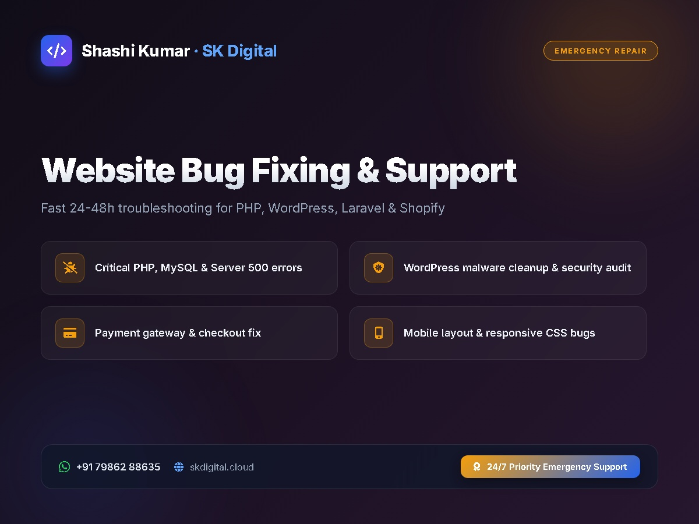

Many businesses invest heavily in Google Ads, Meta campaigns, and SEO only to wonder why their sales fail to scale. When web traffic increases but inquiries remain stagnant, the problem is rarely traffic volume: it is conversion friction.
Vague value propositions, hidden shipping fees, unintuitive mobile navigation, cluttered forms, and slow checkouts quietly cause interested prospects to abandon their journey. A conversion rate optimization (CRO) audit identifies these barriers systematically and provides an actionable blueprint to turn clicks into revenue.
- 1. What Is a Conversion Rate Optimization Audit?
- 2. Mapping the Customer Conversion Funnel
- 3. Using GA4 Funnels to Detect Drop-Offs
- 4. The 10-Point Website CRO Audit Checklist
- 5. Eliminating E-Commerce Checkout Friction
- 6. Mobile Usability & Touch Target Optimization
- 7. Prioritizing Fixes: The Impact vs. Effort Matrix
- Frequently Asked Questions
1. What Is a Conversion Rate Optimization Audit?
A CRO audit is an evidence-based forensic analysis of how real visitors interact with your website. Rather than relying on personal design opinions, it combines quantitative analytics (GA4 funnel tracking, heatmaps) with qualitative UX heuristics to answer three core questions:
- Where are visitors dropping off? Identifying the exact template or step where users exit.
- Why are they hesitating? Diagnosing friction points, ambiguous microcopy, or technical bugs.
- What code changes will fix it? Creating a prioritized implementation roadmap.
2. Mapping the Customer Conversion Funnel
Every commercial website has a sequential path to conversion:
- E-Commerce Funnel: Landing Page → Category Filter → Product Page → Add to Cart → Checkout → Payment Completed.
- B2B / Service Funnel: Search Landing → Service Details → Proof / Case Studies → Inquiry Form → Confirmation.
3. Using GA4 Funnels to Detect Drop-Offs
Google Analytics 4 (GA4) Funnel Exploration lets you visualize completion rates across steps. If 1,000 visitors view a product, 250 add it to cart (25%), but only 15 begin checkout (1.5%), your cart drawer or login prompt has an acute usability barrier.
4. The 10-Point Website CRO Audit Checklist
- 5-Second Test: Can a first-time visitor understand your offer and core benefit in 5 seconds?
- Primary Call-to-Action (CTA): Is the primary button visually dominant, specific, and above the fold?
- Form Friction: Does your lead form ask only for indispensable fields?
- Social Proof: Are real Google reviews, verified badges, and client logos placed near CTAs?
- Transparent Pricing: Are unexpected delivery costs or surprise taxes disclosed upfront?
- Mobile Readability: Is font size at least 16px with comfortable finger-touch padding (min 48x48px)?
- Page Stability: Do banners or popups shift content while someone is trying to click?
- Search & Filter Navigation: Can buyers find specific products within 2 clicks?
- Payment Options: Are local gateways (UPI, Apple Pay, Google Pay, Razorpay, Stripe) integrated?
- Error Recovery: Do form fields display clear, helpful inline validation messages?
5. Eliminating E-Commerce Checkout Friction
Checkout is where buying intent is highest. The top three causes of checkout abandonment are:
- Forced Account Creation: Forcing a user to create a password before buying kills conversion. Always offer seamless Guest Checkout.
- Hidden Shipping Surcharges: Revealing unexpected shipping fees at the final payment step accounts for 48% of abandoned carts.
- Distracting Header Navigation: Remove global navigation bars during checkout to keep the user focused solely on order completion.
6. Mobile Usability & Touch Target Optimization
Over 70% of e-commerce traffic originates from mobile devices, yet mobile conversion rates are typically half of desktop. Common mobile pitfalls include sticky promotional banners overlapping CTA buttons, microscopic input fields, and aggressive fullscreen exit-intent modals that cannot be easily closed on small screens.
7. Prioritizing Fixes: The Impact vs. Effort Matrix
Our comprehensive audit provides an executive PDF roadmap prioritizing every issue by business impact and engineering effort:
- High Impact / Low Effort: Quick code fixes (sticky Add-to-Cart buttons, form simplifications).
- High Impact / High Effort: Architectural optimizations (redesigning checkout, cart drawer refactors).
- Detailed mobile and desktop video walkthrough highlighting user friction points.